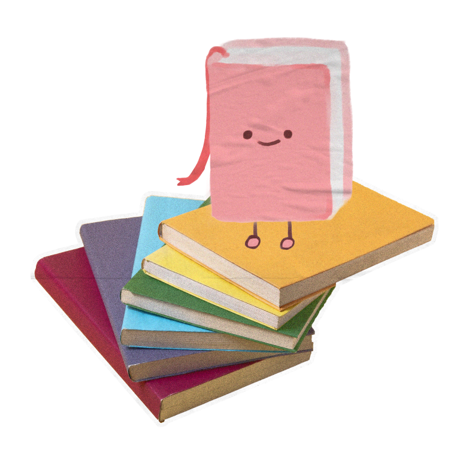
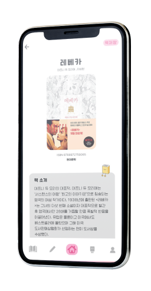

평소 애용하던 독서기록 앱인
“북적북적”의 불편했던 점이나
보완할 점을 직접 디자인해 보았습니다.
I redesigned The App “BookJukBookJuk” which is one of the Apps I frequently use.
I focused on the things that I can improve or uncomfortable factors
for the users while I design it.
Personal Project
Project duration： A Week
Tool：




![The strengths and weaknesses of the application are described here. The weaknesses include some icons that are hard to understand intuitively, an inconvenient menu tab position and a record section that feels too plain. The strengths include a design is cute, a sense of pride from visually seeing reading records accumulate and the fact that it stays simple without complicated features. Three personas are provided. The first is a 37 year old homemaker. She wishes there were an app that let her child write their own reading notes after finishing a book. The second is a 22 year old university student. She thinks it would be nice to look back on what books she's read without having to keep them stored on a shelf. The third is a 31 year old office worker. He reads for self improvement and wants a simple app rather than a complicated one to set and achieve his reading goals.](img/bookbook/bookbook_2.jpg)
![Logo Redesign. The existing main characters from the application were renewed and reused, and the background was filled with the app's name to make it stand out more. Characters Redesign. The characters were refined to look cleaner and more symmetrical. Color system. 'Passion'. A deep rose color. A medium level of saturation and brightness gives it a look that stands out yet still feels soft, capturing the passion of avid readers. 'Balance'. A neutral and simple light gray represents the sense of balance reading brings to the mind. Typography. A simple yet round and cute font pairs well with the characters and blends naturally into the overall mood of the app, improving both readability and the app's overall visual appeal.](img/bookbook/bookbook_4.jpg)
![This shows the screens of the redesigned application. The main home icon was moved to the center so users can access it more easily. The icons were reshaped into a consistent round proportion to match the overall mood of the app. The screenshot icon was repositioned and replaced so it feels more intuitive. Characters screen. A shape reminiscent of a book's ribbon bookmark was used to emphasize the page title. A background was added to draw attention toward the featured main character. Color and bolder font weight were given to the buttons to fix the issue of the original buttons being hard to notice. The overall color of the character introduction page was unified with tones similar to or matching the character's own color to create a sense of stability. My library screen. The menu tab was changed to feel like an index while still standing out visually. A shadow was added to emphasize the feeling of books resting on a shelf. Books were arranged to evoke the look of books displayed on a wall shelf inside a library. The shelf color mainly follows the main theme color.](img/bookbook/bookbook_5.jpg)
![Add book screen. The add book icon is emphasized using the main color. To solve the problem of not being able to tell ebooks and physical books apart at a glance, titles are emphasized with different shapes and colors for each. A shelf shaped element was also added beneath the books to clearly distinguish them from ebooks. Memo writing screen. This was the page users most wanted improved. Various font style options that were missing from the original memo page were added, and the image to text extraction feature, which used to be placed inconveniently at the bottom, was turned into an icon and placed at the top instead. In order the icons represent inserting an image, bold text, italic text, underline, strikethrough and image to text extraction. Records page. The elements were unified into a rounded style. A button was added to the memo tab so users can add a memo more easily from there as well.](img/bookbook/bookbook_6.jpg)